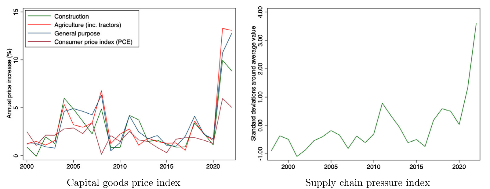
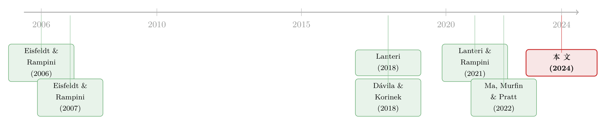

新机器买不到的那一年：一场供给短缺，如何让「从不买新设备」的年轻公司受伤最深
本文读的是 Darmouni & Sutherland (2024, Journal of Financial Economics)：当 2021–2022 年疫情把「新设备」的生产链掐断，老公司被迫涌入二手设备市场抢货，反而把那些本来就只买二手、几乎不碰新机器的年轻公司挤了出去——年轻公司的投资量在相对意义上骤降了 21 个百分点。一场针对「新资本」的供给冲击，最终经由二手市场的「分配性外部性」，砸到了离冲击最远的那群人头上。
1 引言：当价格不再是唯一的故事
我们先从一个几乎所有投资模型都默认、却很少被认真追问的假设说起。
打开任何一本公司金融或宏观的教科书，企业的投资决策大体长成这个样子：给定一个资本的价格 q，企业根据自己的边际生产率，决定买多少。价格高了就少买，价格低了就多买。换句话说，资本永远是「买得到」的，区别只在于「贵不贵」。标准模型里通常还只有一种「单一年份 (single vintage)」的资本，它以一个统一的速度折旧——于是模型关心的，是投资的水平 (level)，而不是投资的构成 (composition)。
但现实世界并不总是这样运转。2021 年的某一天，全球最大的设备制造商之一 Case New Holland 的负责人这样描述他面对的局面：「这是我职业生涯里见过最糟糕的供应链……经销商不得不告诉客户，要等上 12 个月才能拿到一台新机器。」
请注意，这句话的关键不是「新机器变贵了」，而是「新机器你压根买不到、或者要等一年」。这是一种和价格上涨在性质上不同的冲击：它是数量上的、固定的供给短缺 (a fixed capital supply shortage)。当 q 不再能出清市场，当价格信号失灵、要靠「排队」和「等待」来配给，标准投资模型的那套逻辑还成立吗？企业会怎么办？谁受伤最深？
这正是 Darmouni 和 Sutherland 这篇论文要回答的问题。而他们给出的答案，藏着一个相当反直觉的反转。

Figure 1: shows that the Global Supply Chain Pressure index climbed
2 研究问题：一场天然的「断供」实验
接着，一个自然的问题是：要研究「新资本买不到」会发生什么，你得先找到一个新资本真的买不到的时刻。这种时刻并不好找——大萧条、金融危机这些经典冲击，砸的多半是需求和信贷，是「企业不想买」或「借不到钱买」，而不是「想买也买不到」。
疫情后期的 2021–2022 年，恰恰提供了这样一个难得的场景。几股力量汇到了一起：制造业工厂、港口、卡车运输环节的劳动力短缺；钢铁、塑料、橡胶、尤其是微芯片 (microchips) 的全球抢购；外加过去几十年制造业普遍采用的「精益生产 (lean manufacturing)」模式——这种模式把库存压到极薄、追求产量与需求精确匹配，效率是高了，可一旦遇上劳动力中断和运输延误，它没有任何缓冲。
结果就是图 1 展示的画面：从 2020 年起，设备价格的涨幅远远甩开了一般通胀（PCE 指数）；而纽约联储编制的全球供应链压力指数 (Global Supply Chain Pressure Index)，在 2021 年底一度飙到了高出其历史均值近 4 个标准差的位置。对研究者而言，重要的不是价格涨了多少，而是新设备整体上变得「不再有吸引力」——无论这是因为贵，还是因为要等一年。
论文里有一处方法论上的小心思值得点出：作者反复强调，他们不必去区分「价格上涨」和「交货延迟」各自贡献了多少。对企业的决策来说，二者殊途同归——新机器都「难找」了。这让识别变得干净，因为你不需要去拆解一个本来很难拆解的混合冲击。
于是问题被精确地提了出来：当一种固定的资本供给短缺降临，企业的投资会如何在横截面上重新分布？二手市场扮演了什么角色？
3 数据：把每一台机器，沿着时间和地理「追踪」下去
要回答这个问题，你需要一类很特别的数据——能看到单台设备在不同企业之间流转的微观交易记录。大多数实证研究用的是企业层面或更宏观的数据，看不到「这台拖拉机从 A 公司转手给了 B 公司」这种细节。
作者用的是 UCC 申报 (UCC filings) 数据。在美国，当一笔有担保的贷款发生时，贷款人会向借款人所在州的州务卿提交一份 UCC-1 文件，以法律形式确立自己对抵押物的优先求偿权。这份文件通常会写明借款人、贷款人、申报日期，以及——这是关键——抵押设备的制造商、型号、出厂年份和序列号。申报一次往往只要 25 美元甚至更少，所以覆盖面极广。
具体的数据来自一家专注设备金融的供应商 Randall Reilly 的 EDA 数据集，它把抵押品信息标准化，归入 497 个设备代码，并补上了一个 Dun & Bradstreet（DNB）编号，从而能算出企业年龄 (firm age)。
数据的体量和颗粒度都相当可观：
- 覆盖 1997 年 1 月至 2022 年 3 月间发起的、超过
1,000万份合约、1,200万台独立设备； - 涉及来自每个州、每个行业的
200多万家独立借款人； - 设备的平均（中位）年龄是
4.77（1）年，60.5%的合约由新设备担保； - 二手设备的平均（中位）估值约
$55k（$32k），新设备约$64k（$27k）； - 企业的平均（中位）年龄是
21（13）岁，且年龄信息在80%以上的样本中可得。
这里有两个需要诚实交代的局限，作者也没有回避。第一，UCC 数据只覆盖有担保的设备交易，全现金买断的不在其中——这让样本天然偏向那些更依赖担保融资、更小的企业。第二，价格只在约 5% 的样本里能直接观测到，其余只能用 Randall Reilly 基于挂牌价、拍卖价估算的、噪声更大的估值。
「只看到有担保交易」这件事，乍看是个致命的样本选择问题：万一年轻公司只是改用现金买了，而我们没看见呢？作者对此专门做了检验（见后文「稳健性」），核心论点是——他们重点关注的年轻公司，通常本来就缺乏用现金一次性买断的能力，所以漏掉的那部分对他们影响不大。
为什么用「年龄」来衡量企业异质性？因为在这条文献里，年龄是财务约束 (financial constraints) 的经典代理变量：年轻公司更难融资、更受约束。这一点早已被 Hadlock 和 Pierce (2010) 等工作反复确认。年龄不完美，但它在 UCC 这种缺乏资产负债表信息的数据里，是少数稳定可得、又有理论意涯的变量。
4 识别策略：从「时间断点」到一次罢工
然后，识别的问题来了。我们想知道供给短缺的因果效应，可 2021 年底同时发生了太多事——需求在变、信贷在变、情绪在变。怎么把「新资本短缺」这一条线单独拎出来？
作者用了两套互补的策略。
第一套：围绕 2021 年 11 月的时间序列断点。 大多数检验把 2021 年 11 月当作分水岭，因为到那时设备短缺已经「无可争议地普遍化」。最核心的估计方程长这样：
被解释变量 NewCapital 要么是「设备是否为新」的指示变量，要么是「设备年龄的对数」。样本取 2019 年 1 月到 2022 年 3 月的全部合约，标准误按月-年聚类（改按设备代码聚类不影响结论）。
这套设定的妙处在于固定效应的层层加码：当你一路加到企业固定效应 ξ_i，识别就被压缩到「同一家公司，在短缺前后，买新还是买旧、买的设备有多老」这种公司内部的变化上了——这就排除了「是不是某类公司整体在变」的干扰。
但时间断点有个天生的软肋：2021 年 11 月前后，难道只有设备短缺在变吗？需求、信贷、宏观情绪都可能同时在动。光靠一个时间虚拟变量，你没法把「供给短缺」从「这段时间里所有别的事」里干净地剥离出来。
这就是第二套、也是真正关键的一步：约翰迪尔 (John Deere) 罢工。 约翰迪尔是美国最大的农机制造商、第二大工程机械制造商（光是工程机械合约在样本里就超过 60 万份）。2021 年 10 月到 11 月间，约 10,000 名工人在 14 家工厂罢工——这是自 2019 年通用汽车罢工以来美国私营部门最大的一次停工。一家如此体量的制造商突然「断供」，对多个行业都是一次实打实的供给冲击。
作者用它做了一个 Bartik（移动份额）估计 (Bartik estimation)：用疫情前约翰迪尔在不同设备类型上的市场份额差异，来度量其他制造商受这次罢工冲击的异质性暴露。直觉是这样的：在约翰迪尔市场份额高的设备类型里，它的停工造成的短缺更严重；份额低的设备类型则几乎不受影响。于是你可以对比这两类设备类型上的交易行为。
这套设计最大的好处，是它允许在基准回归里加入时间固定效应——因为冲击的强弱来自「设备类型 × 约翰迪尔份额」的交互，而不是单纯的时间前后。这样一来，任何对投资需求或信贷条件的同期共同冲击，都被时间固定效应吸收掉了。在约翰迪尔份额高的设备类型上，作者发现：新旧设备价格都更高、两次销售之间的间隔更短、相邻两任使用者之间的地理距离更远、行业重合度更低。这一切都指向同一个故事——供给短缺确实在搅动二手市场。
5 理论预测：两种投资观，和一个不那么显然的猜想
在看主要结果之前，得先把作者借以解读数据的理论框架讲清楚——因为这篇论文的「反转」，恰恰是从理论的细微之处长出来的。
作者把投资模型分成两大类。第一类是「经典观」：抽象掉新旧资本的差别，假设只有单一年份的资本，关心的是投资的水平。第二类是「资本再配置观 (capital reallocation view)」：强调新资本的「一级市场」和旧资本的「二级市场」之分。在后者的均衡里，企业去哪个市场投资，是随横截面变化的——财务受约束的公司倾向于买那些更有钱的公司用过的旧资本（这正是 Eisfeldt 和 Rampini (2007) 「新还是旧？」一文的核心）。
有了这个框架，作者提了两个问题。
第一个问题：短缺之后，哪类公司最aggressively地转向二手资本？ 这里的答案并不是「最年轻、最受约束的公司」。Lanteri 和 Rampini (2021) 的资本再配置模型预测的是——位于年龄分布中段的公司。直觉很巧妙：最年轻的公司本就太穷，它们在正常时期就几乎不买新设备，所以新资本短缺对它们的「直接」冲击很小；而最老的公司，则继续去抢那少量还能买到的新设备。真正会在新旧之间剧烈切换、用二手资本来「以旧补新」的，是夹在中间那群。
为什么受约束的公司对价格反应不同？这要追到一个最简单的一阶条件。在 Rampini (2013) 这类标准模型里，不受约束的公司 U 按下面的边际条件选择资本 k_U：
$$ q = \beta\, f'(k_U) $$
这里 q 是资本的价格，β 是贴现率，f' 是边际产出。这个式子说的是：不受约束的公司把资本买到「贴现后的边际产出恰好等于价格」为止。而受约束的公司不在这条曲线上——它的投资被融资能力卡住，所以当价格 q 上涨时，它的投资反而没那么敏感（它本来就买不到那个最优量）。这就引出了第二个问题里的张力。
第二个问题：短缺之后，哪类公司的投资降得最多？ 作者坦言，理论上答案「并不显然」，因为有两股方向相反的力量：
- 一方面，年轻公司本就很少买新设备，对短缺的直接暴露更小——这会让它们的投资降得更少；
- 另一方面，当老公司转向二手资本，二级市场被点燃、竞争加剧，这种「分配性外部性 (distributive externalities)」（Dávila 和 Korinek (2018)、Lanteri 和 Rampini (2021)）可能反过来伤到年轻公司——这会让它们降得更多。
而且，投资对二级市场繁荣的反应本身也有两股反向的力：受约束的公司价格弹性低（价格涨了它也降不了多少投资，倾向于让它们多投），但受约束的公司对经济好转的敏感度也低（倾向于让它们少投）。哪股力占上风？
理论给不出确定的答案。这是一个纯粹的实证问题。 而这，正是这篇论文真正的价值所在。
6 主要结果：反转出现了
现在，把理论的悬念交给数据。
第一组结果——二级市场的繁荣。 在 2021 年秋天，交易显著地更可能涉及旧设备。论文用一个很形象的比喻：二手资本成了新资本短缺时的「备胎 (spare tire)」。不仅旧设备占比上升，二级市场的周转也明显加快——同一台设备两次连续出售之间的间隔更短、相继买家之间的地理距离更远、不同行业之间的旧设备交易更频繁。最后这一点尤其耐人寻味：它意味着企业在「将就」，买下并非最适合自己的二手货，甚至有人在「收割」设备，拆出里面的电子件、芯片和零部件。一句话，企业在为旧资本更激烈地竞争。
第二组结果——「企业年龄–资本年龄梯度」的剧变。 正常时期，年轻公司倾向于投资更老的资本（这正是 Ma, Murfin, Pratt (2022) 「年轻公司，老资本」的发现）。而在短缺期间，作者看到中段年龄组的企业，其购入设备的年龄出现了一个尖峰——这恰好印证了 Lanteri 和 Rampini (2021) 的预测：是中间那群公司，最aggressively地从新资本切换到了二手资本。
第三组、也是最关键的结果——反转。 谁的总投资降得最多？答案是最年轻的公司。它们的总资本投资量，在相对意义上骤降了 21 个百分点。
请把这个数字和前面的逻辑放在一起看，你才会感到它的冲击力：年轻公司本来就很少买新设备，它们离这场「新资本短缺」最远，却受伤最深。 为什么？因为老公司被新资本短缺逼进了二手市场，而二手市场正是年轻公司赖以生存的地方。正常时期，是老公司把用过的设备卖给年轻公司；短缺一来，老公司反过来和年轻公司抢二手货，把它们挤出了市场 (priced out)。
这就是「分配性外部性」最生动的一次实证显形：冲击本身只打在「新资本」上，但经由二级市场的价格和竞争，它的最终落点，是那些根本不碰新资本的人。
7 稳健性与识别的威胁
一个聪明的读者此刻一定会追问：这会不会只是别的什么东西伪装成了你的结论？作者准备了几道防线。
会不会是 UCC 样本选择？ 担心年轻公司只是转去用现金买断、从而「消失」在数据里。作者的回应是：他们关注的年轻公司本就缺乏现金买断的能力；而且，加入控制企业类型各方面的更细颗粒度固定效应、或按批发商库存的设备类型与地理分布对回归加权，结论都不变。
会不会是信贷渠道？ 也许年轻公司只是更难借到钱。但作者发现结果不随非银市场份额变化；更有说服力的是一个安慰剂检验——在 2008–2009 金融危机期间，并没有出现类似的资本再配置模式。这强烈暗示，他们抓到的是供给短缺特有的现象，而非一般性的信贷紧缩。
会不会是需求侧的故事？ 也许年轻公司只是不想投了。但数据显示，短缺期间年轻公司和别人一样跑得更远、从更不相似的公司那里购入设备——它们的资本需求并没有下降，是被供给端挤出去的。
机制是否一致？ 与「二级市场竞争」这一核心机制吻合的是：冲击对年轻公司的伤害，在二级市场流动性较低的细分领域里更强。此外，剔除掉 2020 年年轻企业数量增长低的州，结论也不受影响。
这套组合拳相当扎实。但我仍要在后面的评述里，留几个保留意见。
8 文献脉络：从「资本再配置」到「分配性外部性」
让我们把镜头拉远，看看这篇论文站在一条怎样的脉络上。
这条线的起点，是把「资本再配置 (capital reallocation)」从投资研究的边角，推到舞台中央的一系列工作。Eisfeldt 和 Rampini (2006) 指出，资本在企业间的再配置，是投资的一个关键维度——而不只是「买新机器」这一件事。紧接着，Eisfeldt 和 Rampini (2007) 在「新还是旧？」里给出了一个核心洞见：在信贷约束下，受约束的（穷的）公司买旧资本，不受约束的（富的）公司买新资本。这为后来「年轻公司配老资本」的所有讨论奠了基。

接着，Lanteri (2018) 把二手资本市场的内生不可逆性和跨周期再配置模型化；Lanteri 和 Rampini (2021) 则更进一步，研究「约束有效 (constrained-efficient)」的资本再配置，并把 Dávila 和 Korinek (2018) 那套「金融摩擦下的货币性外部性 (pecuniary externalities)」的思想，引入到二手资本市场——这正是「分配性外部性」概念的理论源头。与此同时，Ma, Murfin, Pratt (2022) 用「年轻公司，老资本」这篇实证，把这条理论线钉在了真实数据上。Eisfeldt 和 Shi (2018) 则为整片领域写了一篇权威综述。
那么，这篇论文站在哪里？它做了两件前人没做的事。其一，前面的研究多关注生产率冲击 (productivity shocks)，而本文研究的是一次纯粹的资本供给冲击 (capital supply shock)——这在性质上是新的。其二，它用的是能追踪单台设备跨时间、跨地理流转的交易级数据，而非以往的企业层面或宏观数据，从而第一次为「分配性外部性」提供了直接的微观证据。
如果你对「资本配错地方」这件事本身感兴趣，本博客此前评述过几篇相关的工作，机制各异但都在拷问同一个问题——资本为什么没有流向它最该去的地方。比如从投资者需求侧切入的《钱追着「人气」跑》，以及从市场集中度切入的《市场太「集中」，资本就会配错地方》。本文则提供了一个全然不同的视角：错配也可以是一次供给短缺，经由二手市场的拥挤，被动「外溢」出来的。
9 评论与延伸（Q&A + 研究方向）
(a) 几个可能的疑问
Q：这篇论文的「分配性外部性」，和普通的「挤出效应」有什么区别？
普通挤出多发生在信贷或资金层面——大公司借走了钱，小公司就借不到。这里的外部性发生在实物资本市场：冲击只打在新资本上，但老公司转向二手市场后，通过价格和竞争把伤害传导给了那些只买二手、与新资本短缺毫无直接关系的年轻公司。关键词是「货币性 (pecuniary)」——伤害是通过价格机制、而非通过资源的直接占用实现的。
Q：为什么受伤最重的不是「中段」公司，而是「最年轻」的公司？
因为这是两个不同的问题。「谁切换最aggressively」的答案是中段公司（它们有能力、也有动机用二手补新）；「谁投资降得最多」的答案是最年轻的公司。后者的逻辑是：年轻公司本就栖息在二手市场，当老公司和中段公司一起涌入抢货，价格被抬高、货被抢走，最缺议价能力和现金的年轻公司就被挤出去了。
Q：约翰迪尔罢工这个工具，干净吗？
它的优点很突出：作为一次外生的供给中断，它允许加入时间固定效应，从而吸收同期的需求和信贷冲击。但 Bartik 设计的有效性依赖于「疫情前约翰迪尔的市场份额分布」与「其他潜在冲击」不相关。如果约翰迪尔份额高的设备类型，恰好在别的维度上也更脆弱（比如更依赖芯片），那么部分效应可能来自别处。作者用安慰剂和多重固定效应做了缓解，但这是我个人最想看到更多直接证据的地方。
Q：21 个百分点的下降是「相对」的，到底相对于谁？
是相对于其他公司而言年轻公司投资量的相对跌幅。它衡量的是横截面的再分配，而不是年轻公司投资的绝对归零。换句话说，这个数字回答的是「谁在这场短缺里相对更吃亏」，而不是「整个经济的投资掉了多少」。理解这一点，才不会高估或误读这个量级。
Q：只看到有担保交易，会不会系统性地高估了对年轻公司的伤害？
这是最实在的隐忧。如果年轻公司在短缺期更多改用现金买断，数据就会「夸大」它们的投资下降。作者的反驳是这群公司本就缺现金、难以买断，加之需求侧证据（它们跑得更远、买得更杂）显示它们想买却买不到，而非主动退出。逻辑成立，但严格说，「没观测到的现金交易」终究是一个无法被完全证伪的盲区。
Q：这对宏观政策意味着什么？
作者明确指出，针对中小企业的补贴若设计不当，可能适得其反——如果补贴太宽泛，等于往本已拥挤的二手市场里再添买家，把竞争推得更高，反而加剧对年轻公司的挤出。政策必须精准瞄准，并把「均衡中的资本再配置」考虑进去。这是一个很重要、也很容易被忽视的政策含义。
(b) 几个可能的研究问题与提案
1. 把「分配性外部性」搬到公司债二级市场。
【经济故事】本文的核心机制是「一种资产的供给短缺，经由二级市场竞争，伤到了依赖该二级市场的边缘买家」。这在信用市场有天然的类比：当高评级新债供给收缩（比如某轮国债挤占），被迫转向二级市场的大型机构，会不会挤出那些本就只在二级市场捡漏的小机构或高收益买家？ 【可行性】中。需要 TRACE 交易级数据加持有人信息（如 eMAXX/保险公司 NAIC 持仓），识别可借鉴某次新债供给的外生收缩。难点在于找到一个像约翰迪尔罢工那样干净的供给冲击。
2. 外资持有人作为二级市场的「边缘买家」。
【经济故事】在公司债市场，外国投资者常常是流动性的边际提供者或需求者。若某次冲击让国内机构集中涌入某一券种，外资是被挤出还是被吸引？这恰好把「分配性外部性」和「外资持有人」两条线接到了一起。 【可行性】中。需要 TIC 数据或券层面的外资持仓，识别上可利用监管或指数纳入带来的外生需求变动。诚实地说，把「外生供给短缺」对应到债券市场，比设备市场难，因为债券的「短缺」更模糊。
3. 二手资本市场的「搜寻摩擦」与地理。
【经济故事】本文发现短缺期买家跑得更远、买得更杂，暗示二级市场是去中心化、有搜寻摩擦的（Gavazza (2011)、Wright et al. (2018)）。一个自然的问题是：搜寻摩擦的高低，是否决定了一个地区/行业在供给冲击下的韧性？流动性差的细分市场是否放大了分配性外部性？ 【可行性】高。作者的 UCC 数据本身就支持这一拓展——用地理距离和行业重合度构造摩擦度量，与冲击强度交互即可。数据现成，识别清楚。
4. 折旧、维修与「设备寿命」的内生延长。
【经济故事】买不到新机器时，企业除了买二手，还可能选择修旧、续用老设备。这会内生地延长设备的经济寿命，改变整个经济的资本年龄结构，进而影响未来几年的投资周期。短缺会不会留下一个「资本老龄化」的长尾？ 【可行性】中。UCC 数据能看到设备年龄，但看不到维修支出。需要补充设备维修/零部件的交易数据（本文已提到「拆设备取零件」的现象），识别上可比较高/低约翰迪尔暴露行业在短缺后数年的设备年龄演化。
10 我的判断
这是一篇「数据 × 时机 × 理论」三者咬合得相当漂亮的论文。
贡献上，它做到了两件难事：一是抓住了一次罕见的、针对新资本数量而非价格或需求的供给冲击，让「资本再配置」这条偏理论的文献第一次有了干净的实证支点；二是用交易级数据，为「分配性外部性」这个原本只活在宏观模型里的概念，提供了可触摸的微观证据——而且证据指向一个反直觉、却逻辑自洽的结论：离冲击最远的年轻公司受伤最深。这种「反转」本身，就是好论文的标志。
对识别的担忧，我有两点。其一，约翰迪尔 Bartik 的外生性，最终仍依赖「疫情前份额分布与其他潜在冲击不相关」这一无法被完全检验的假设；若约翰迪尔份额高的设备类型在芯片依赖度等维度上系统性不同，部分效应可能来自别处。其二，「只看有担保交易」这个样本盲区，虽经作者多方缓解，但「未观测的现金买断」终究无法被证伪——它对结论是「保守」还是「夸大」，严格说仍是一个信念问题。
后续我最想看到的，是这个机制在信用市场里的对应物：当一种安全资产的供给收缩，被挤出的会是谁？以及，这场短缺是否在数年后留下了一个「资本老龄化」的长尾——如果年轻公司被迫推迟或放弃了投资，那这场看似短暂的供给冲击，可能在它们的资产负债表上刻下远比 2022 年 3 月更长的印记。
参考文献
- Dávila, E., Korinek, A. (2018). Pecuniary externalities in economies with financial frictions. Review of Economic Studies 85(1), 352–395.
- Eisfeldt, A.L., Rampini, A.A. (2006). Capital reallocation and liquidity. Journal of Monetary Economics 53(3), 369–399.
- Eisfeldt, A.L., Rampini, A.A. (2007). New or used? Investment with credit constraints. Journal of Monetary Economics 54(8), 2656–2681.
- Eisfeldt, A.L., Shi, Y. (2018). Capital reallocation. Annual Review of Financial Economics 10, 361–386.
- Gavazza, A. (2011). The role of trading frictions in real asset markets. American Economic Review 101(4), 1106–1143.
- Hadlock, C.J., Pierce, J.R. (2010). New evidence on measuring financial constraints: moving beyond the KZ index. Review of Financial Studies 23(5), 1909–1940.
- Lanteri, A. (2018). The market for used capital: endogenous irreversibility and reallocation over the business cycle. American Economic Review 108(9), 2383–2419.
- Lanteri, A., Rampini, A.A. (2021). Constrained-efficient capital reallocation. NBER Technical Report.
- Ma, S., Murfin, J., Pratt, R. (2022). Young firms, old capital. Journal of Financial Economics 146(1), 331–356.
- Rampini, A.A. (2013). Collateral and capital structure. Journal of Financial Economics 109(2), 466–492.
- Wright, R., Xiao, S.X., Zhu, Y. (2018). Frictional capital reallocation I: ex ante heterogeneity. Journal of Economic Dynamics and Control 89, 100–116.
- Darmouni, O., Sutherland, A. (2024). Investment when new capital is hard to find. Journal of Financial Economics 154, 103806.